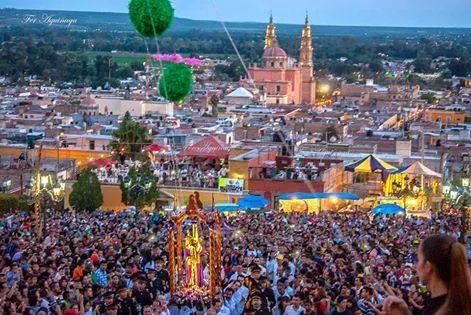

ORIGENES
Se fundo el miercoles 31 de marzo de 1563 como poblacion de españoles con el título de villa pues tuvo menos de 100 familias fundadoras (de haber rebasado tal cifra sería ciudad) con el nombre de Santa Maria de los Lagos. Su actual templo parroquial (que es el cuarto desde la fundacion de la parroquia en mayo de 1563) fue construido a partir de 1741 a iniciativa del Cura Diego Jose Cervantes y Cuenca nacido en Queretaro, con piedra rosa y de estilo barroco. El principal alarife autor de las obras del templo parroquial de la Asunción fue Nicolas de Santiago Medina, indio del pueblo de La Laguna.
Nuestras fiestas
En Agosto contamos con las principales fiestas de la Ciudad en honor a nuestro Padre Jesús del Calvario.
La Feria anual de Lagos se lleva a cabo del 26 de Julio al primer domingo de Agosto; en estas fechas se acostumbra adornar las calles con papeles y focos de colores.
Fiestas en honor de nuestra Sra. de la Merced el 24 de septiembre.
Festival de Otoño organizado por la Universidad de Guadalajara.
Y del 1 al 8 de diciembre, fiestas de Moya.
